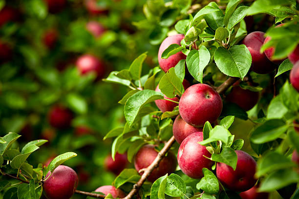

eco AI Plant Doctor
Identify Plant Diseases in Seconds
Upload a photo of your plant's leaf and let our AI instantly diagnose the issue, providing organic and practical treatment plans to restore its health.
Upload a photo of your plant's leaf and let our AI instantly diagnose the issue, providing organic and practical treatment plans to restore its health.
Precision biology meets computer vision in seconds.
Take a clear photo of the affected plant leaf using your phone or upload an existing image.
Our trained neural network analyzes the pattern, texture, and color anomalies of the leaf.
Get a specific diagnosis and a custom treatment plan to restore your plant's health.
The core of DetectX. Experience biological precision.
Support for JPG, PNG up to 10MB

Detection Confidence: 94.2%

Scientific: Alternaria solani
Organic Correction
Remove infected lower leaves and apply copper-based fungicide or Neem oil solution every 7-14 days.
Cultural Practice
Increase spacing between plants for better airflow and avoid overhead watering to keep foliage dry.
Trained on over 2.5 million verified botanical samples and pathological cases from across the globe.
Real-time processing on edge servers ensures you get diagnosis in less than 3 seconds.
Algorithms are cross-validated by leading agronomists and plant pathologists.
Our models are trained to identify diseases across a wide variety of crops.

10+ Diseases
5+ Diseases

8+ Diseases
4+ Diseases